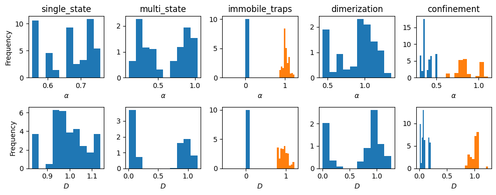

num_experiments, num_fovs = 5, 1
dics = []
for i in range(num_experiments):
dic = _get_dic_andi2(i+1)
dics.append(dic)
df_list, _, _ = challenge_2022_dataset(experiments = num_experiments,
num_fovs = num_fovs,
dics = dics,
return_timestep_labs = True
)datasets_challenge
ANDI challenge 2020
C:\Users\Gorka\Anaconda3\envs\andi_dataset\lib\site-packages\fastcore\docscrape.py:225: UserWarning: Unknown section Notes
else: warn(msg)challenge_2020_dataset
challenge_2020_dataset (N:numpy.ndarray|int=1000, max_T:int=1000, min_T:int=10, tasks:list|int=[1, 2, 3], dimensions:list|int=[1, 2, 3], load_dataset:{'True','False'}=False, save_dataset:{'True','False'}=False, path_datasets:str='', load_labels:{'True','False'}=True, load_trajectories:{'True','False'}=False, save_trajectories:{'True','False'}=False, path_trajectories:str='datasets/', N_save:int=1000, t_save:int=1000, return_noise:{'True','False'}=False)
Creates a dataset similar to the one given by in the ANDI challenge. Check the webpage of the challenge for more details. The default values are similar to the ones used to generate the available dataset.
The function returns 6 variables, three variables for the trajectories and three for the corresponding labels. Each variable is a list of three lists. Each of the three lists corresponds to a given dimension, in ascending order. If one of the tasks/dimensions was not calculated, the given list will be empty.
See the tutorials in our Github repository to learn about this function.
| Type | Default | Details | |
|---|---|---|---|
| N | numpy.ndarray | int | 1000 | Number of trajectories per class (i.e.size # models x # classes). If int, all classes have same number. |
| max_T | int | 1000 | Maximum length of the trajectories in the dataset. |
| min_T | int | 10 | Minimum length of the trajectories in the dataset. |
| tasks | list | int | [1, 2, 3] | Task(s) of the ANDI challenge I for which datasets will be generated. |
| dimensions | list | int | [1, 2, 3] | Dimension(s) for which trajectories will be generated. Three possible values: 1, 2 and 3. |
| load_dataset | {‘True’, ‘False’} | False | If True, the module loads existing datasets from the files task{}.txt and ref{}.txt. |
| save_dataset | {‘True’, ‘False’} | False | If True, the module saves the datasets in a .txt following the competition format. |
| path_datasets | str | Path from where to load the dataset. | |
| load_labels | {‘True’, ‘False’} | True | If False, only loads trajectories and avoids the files refX.txt. |
| load_trajectories | {‘True’, ‘False’} | False | If True, the module loads the trajectories of an .h5 file. |
| save_trajectories | {‘True’, ‘False’} | False | If True, the module saves a .h5 file for each model considered, with N_save trajectories and T = T_save. |
| path_trajectories | str | datasets/ | Path from where to load trajectories. |
| N_save | int | 1000 | Number of trajectories to save for each exponents/model. Advise: save at the beggining a big dataset (i.e. with default t_save N_save) which allows you to load any other combiantion of T and N. |
| t_save | int | 1000 | Length of the trajectories to be saved. See comments on N_save. |
| return_noise | {‘True’, ‘False’} | False | If True, returns the amplitudes of the noises added to the trajectories. |
| Returns | multiple | Xn (lists): trajectories Yn (lists): labels loc_noise_tn (lists): localization noise amplitudes diff_noise_tn (lists): variance of the diffusion noise |
ANDI challenge 2022
_defaults_andi2
_defaults_andi2 ()
This class defines the default values set for the ANDI 2022 challenge.
_get_dic_andi2
_get_dic_andi2 (model)
Given the number label of diffusion model, returns a default dictionary of the model’s parameters to be fed to create_dataset The numeration is as follow: 1: single state 2: N-state 3: immobilization 4: dimerization 5: confinement
| Type | Details | |
|---|---|---|
| model | int in [1,6] | Number of the diffusion model |
| Returns | dictionary | Dictionary containing the default parameters for ANDI2022 of the indicated model. |
C:\Users\Gorka\Anaconda3\envs\andi_dataset\lib\site-packages\fastcore\docscrape.py:225: UserWarning: potentially wrong underline length...
Notes
------- in
Creates a datasets with same structure as ones given in the ANDI 2022 challenge. Default values for the
various diffusion models have been set such as to be in the same ranges as the ones expected for the...
else: warn(msg)
C:\Users\Gorka\Anaconda3\envs\andi_dataset\lib\site-packages\fastcore\docscrape.py:225: UserWarning: potentially wrong underline length...
Video Inputs
---------- in
Creates a datasets with same structure as ones given in the ANDI 2022 challenge. Default values for the
various diffusion models have been set such as to be in the same ranges as the ones expected for the...
else: warn(msg)challenge_2022_dataset
challenge_2022_dataset (experiments=5, dics=None, repeat_exp=True, num_fovs=20, return_timestep_labs=False, save_data=False, path='data/', prefix='', get_video=False, num_vip=None, get_video_masks=False)
Creates a datasets with same structure as ones given in the ANDI 2022 challenge. Default values for the various diffusion models have been set such as to be in the same ranges as the ones expected for the challenge. For details, check the ANDI 2022 challenge webpage.
| Type | Default | Details | |
|---|---|---|---|
| experiments | int | 5 | - if int: Number of experiments to generate. Each experiment is generated from one of the available diffusion models. - if list: diffusion models to generate (starting with 1!!!!!) |
| dics | NoneType | None | If given, uses this to set the parameters of the experiments. Must be of length equal to experiments. This overrides any info about chosen models, as the model is set by the dictionary. |
| repeat_exp | bool | True | -> Does not enter into play if experiments is list If True: picks at random the diffusion model from the pool. If False: picks the diffusion in an ordered way from the pool. |
| num_fovs | int | 20 | Number of field of views to get trajectories from in each experiment. |
| return_timestep_labs | bool | False | If True, the output trajectories dataframes containing also the labels alpha, D and state at each time step. |
| save_data | bool | False | If True, saves all pertinent data. |
| path | str | data/ | Path where to store the data. |
| prefix | str | Extra prefix that can be added in front of the files’ names. | |
| get_video | bool | False | If true, get as output the videos generated with Deeptrack for the generated datasets. |
| num_vip | NoneType | None | Number of VIP highlighted in the videos. |
| get_video_masks | bool | False | If True, get masks of videos |
| Returns | tuple | - trajs_out: List of lenght (experiments x num_fovs). Each elements are is dataframe containing the trajectories of a particular experiment/fov, in order of generation (i.e. [exp1_fov1, exp1_fov2, …, exp2_fov1 ….]). If return_timestep_labs = True, the dataframes also contain the labels at each time step. - labels_traj_out: list of same length of trajs_out containing the labels of the corresponding trajectories. Each element contains a list with the labels of each trajectory, following the scheme: [idx_traj, D_1, alpha_1, state_1, CP_1, D_2, alpha_2, …. state_N] - labels_ens_out: list of same length of trajs_out containing the ensemble labels of given experiment. See description of output matrix in utils_challenge._extract_ensemble() |
This function generates trajectory datasets like the ones considered in the ANDI 2022 Challenge. It is based in models_phenom.create_dataset but also applies:
- Apply Field of View (FOV).
- Add localization noise.
- Smooth the labeling of trajectories to a minimum segment length of 5.
- Extracts ensemble properties.
- Generate videos, if asked.
Outputs:
trajs_out: List of lenght (experiments x num_fovs). Each elements are is dataframe containing the trajectories of a particular experiment/fov, in order of generation (i.e. [exp1_fov1, exp1_fov2, …, exp2_fov1 ….]). Ifreturn_timestep_labs = True, the dataframes also contain the labels at each time step.trajs_out: ifget_video = True, returns the video for each experiments / FOV.labels_traj_out: List of same length of trajs_out containing the labels of the corresponding trajectories. Each element contains a list with the labels of each trajectory, following the scheme: [idx_traj, D_1, alpha_1, state_1, CP_1, D_2, alpha_2, …. state_N]labels_ens_out: List of same length of trajs_out containing the ensemble labels of given experiment. See description of output matrix inutils_challenge._extract_ensemble().
Examples
We generate a dataset of trajectories from 5 different experiments. As we are not stating the opposite, each experiment will correspond to one of the 5 diffusion models considered in ANDI2022.
Distributions parameters
We first check how distributed are the diffusion parameters of the generated trajectories.
fig, axs = plt.subplots(2, len(df_list), figsize = (len(df_list)*2, 2*2), tight_layout = True)
for df, ax, dic in zip(df_list, axs.transpose(), dics):
alphas = df['alpha']
Ds = df['D']
states = df['state']
for u in np.unique(states):
ax[0].hist(alphas[states == u], density = 1)
ax[1].hist(Ds[states == u], density = 1)
ax[0].set_title(dic['model'])
plt.setp(axs[:,0], ylabel = 'Frequency')
plt.setp(axs[0,:], xlabel = r'$\alpha$')
plt.setp(axs[1,:], xlabel = r'$D$')
;''
FOVs
We can also check that generating multiple FOVS from every experiments actually choses random FOVs in the desired space.
num_fovs = 3
df_fov, _ , lab_e = challenge_2022_dataset(experiments = [1,2,3,4,5],
num_fovs =num_fovs,
return_timestep_labs = True
)